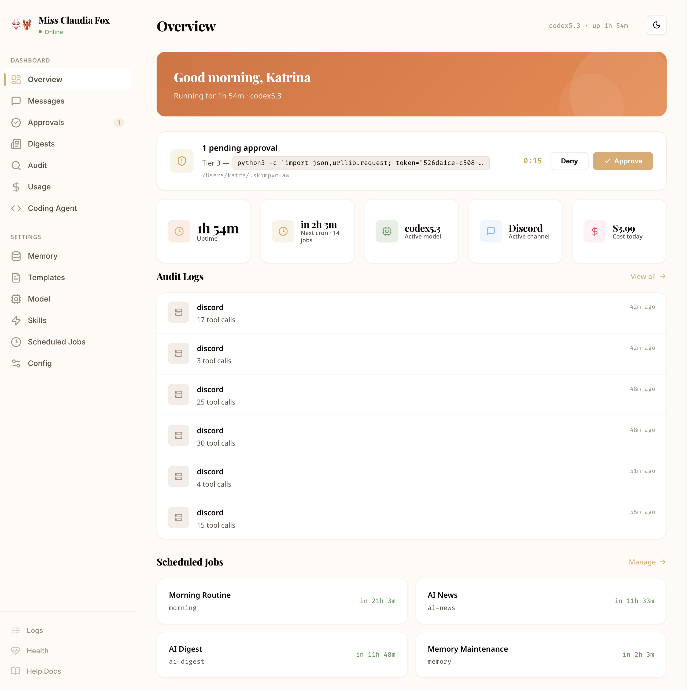
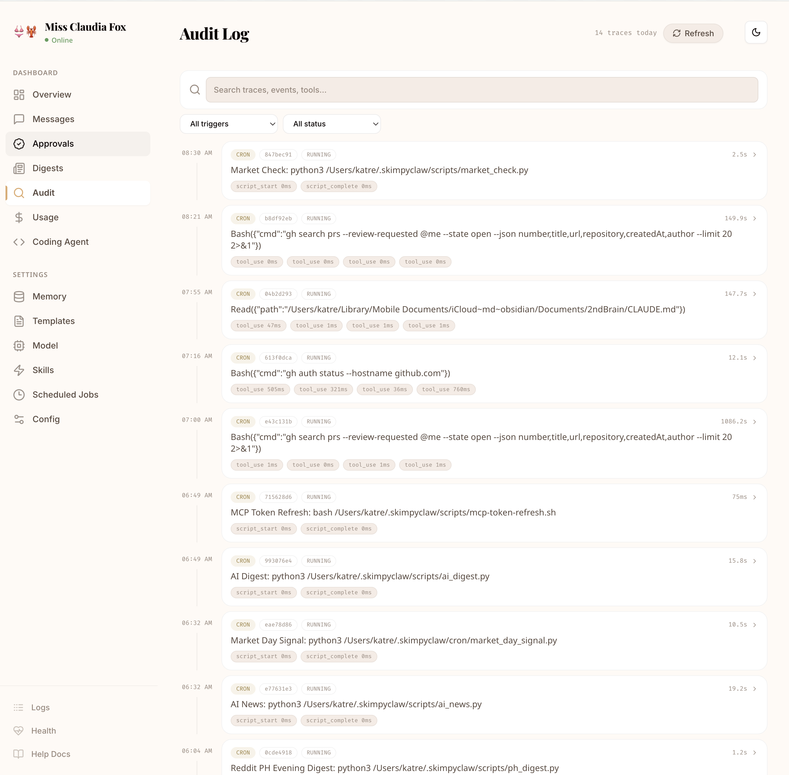
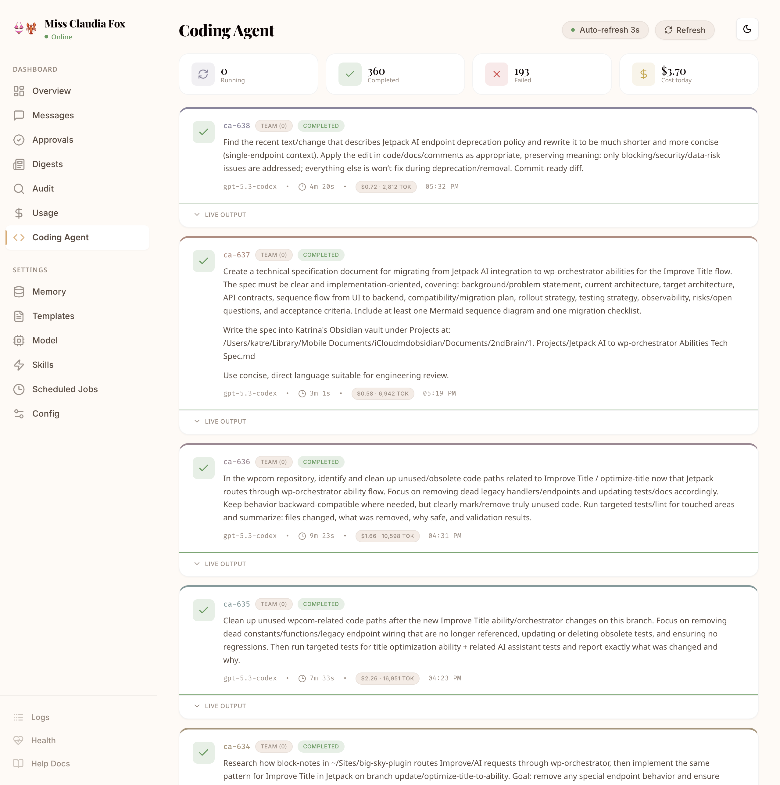
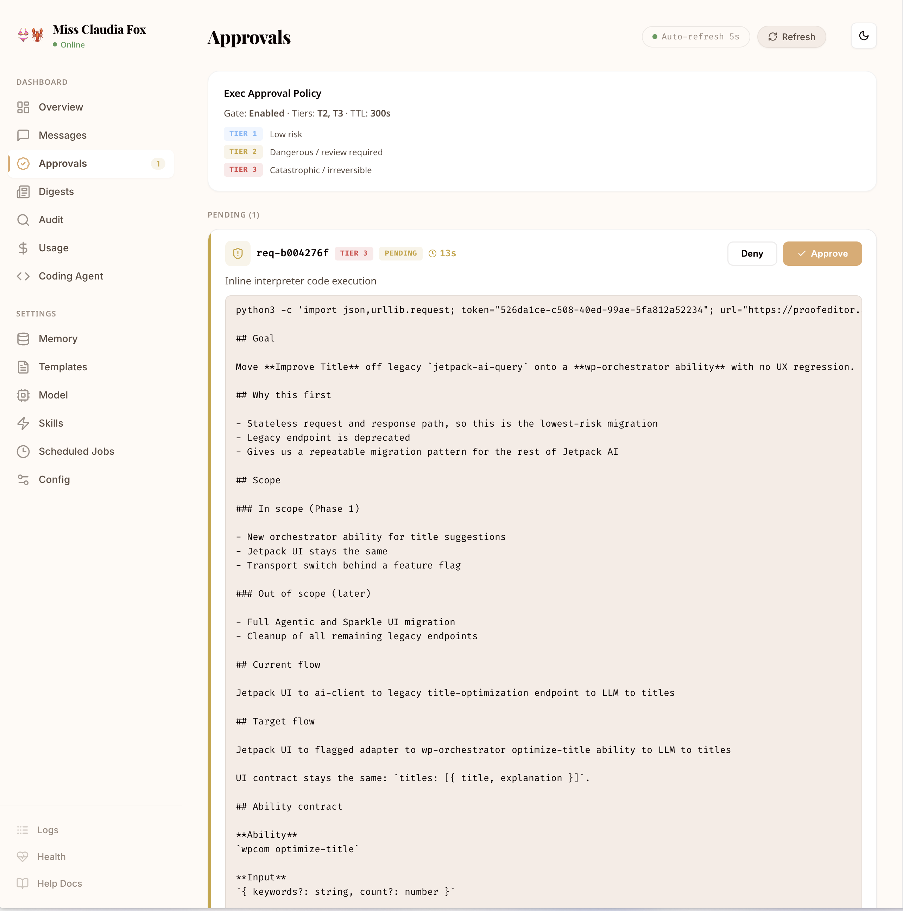
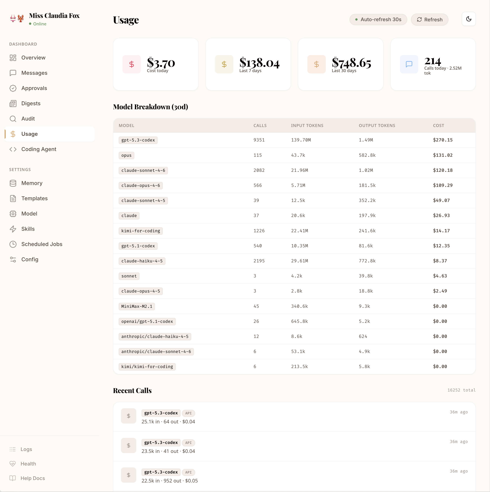
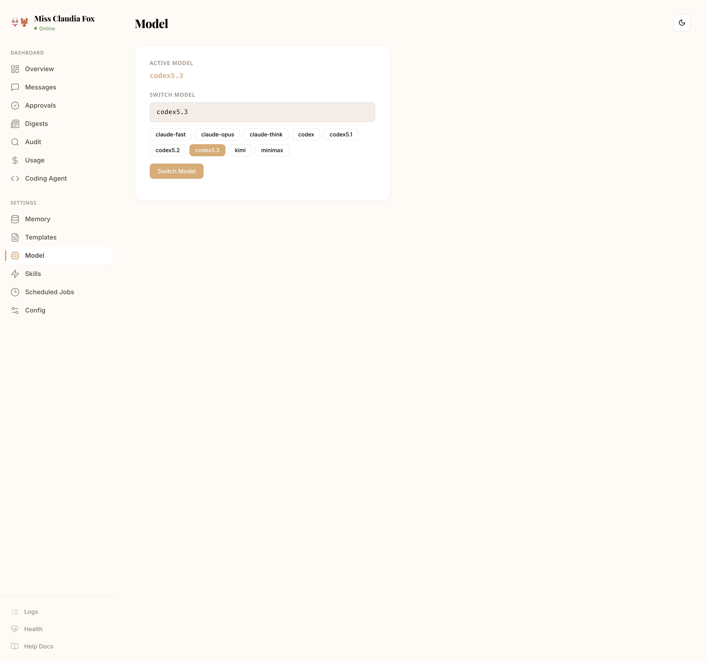
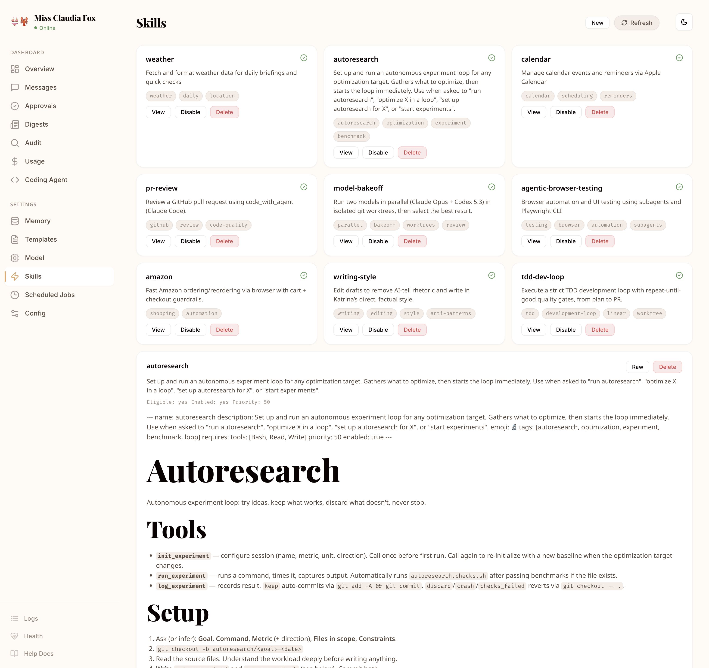
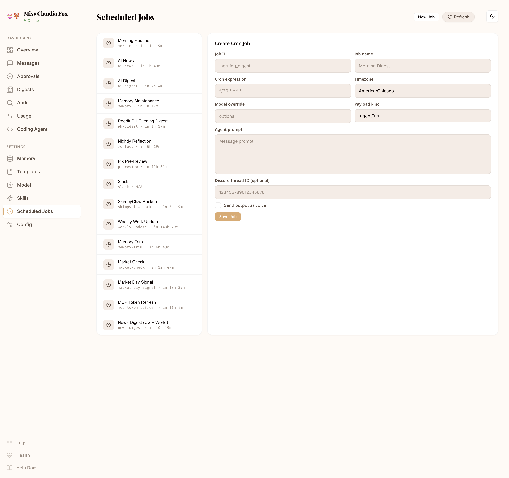

Lightweight personal AI assistant. Chat via Telegram or Discord, invoke configured agents, delegate coding tasks to Claude / Codex CLIs, schedule jobs, approve risky actions — all from one tiny self-hosted service.

Every tool call, LLM request, approval decision, and cron execution is logged with timestamps, token counts, and cost data. Nothing happens in the dark.

Hand a task off to Claude Code or Codex — SkimpyClaw spawns the CLI, streams live output back to chat, and runs build / test validation before reporting. Discord threads can hold bidirectional interactive Claude sessions that `--resume` the same process across follow-ups.

Define multiple SkimpyClaw agents with their own identity, prompts, model, effort, and memory. Discord profiles add a channel-specific shortcut: invoke @reviewer or @researcher, bind the profile to a thread, and keep the conversation routed to that agent.
Tier-based risk classification for every bash command. Low-risk commands run automatically. Dangerous ones require explicit human approval via Telegram or Discord before execution.

Track every token, every API call, every dollar. Usage summaries and per-model cost breakdowns in the dashboard — so you always know what your AI assistant is spending.

Not locked into one runtime. Use Anthropic Claude or Codex-backed models, set defaults per agent, and override models per cron job.

Write skills as simple markdown files with trigger patterns. Skills can invoke bash, file I/O, Fetch, MCP tools, or any combination — activated automatically when patterns match.

Run agent prompts or shell scripts on any schedule. Morning digests, nightly backups, and weekly reports are configured in cron and can be triggered on demand from the dashboard.

Install globally, onboard, and start the daemon.
$ pnpm add -g
skimpyclaw
$ skimpyclaw onboard
$ skimpyclaw start
--daemon